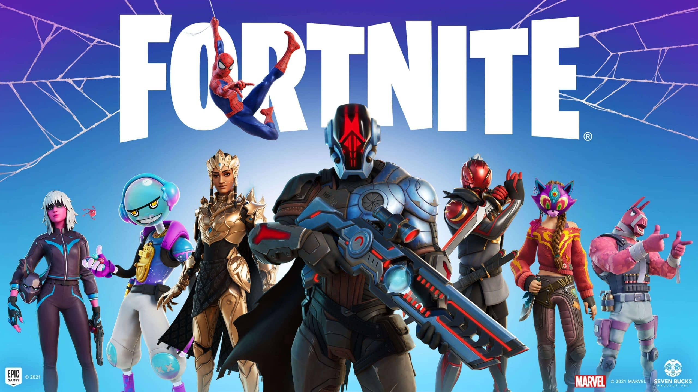
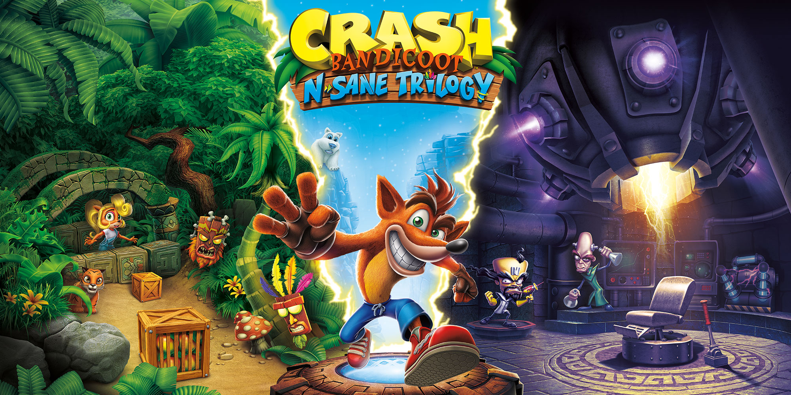

Ésta es una lista de videojuegos que actualmente juego en la PS4
- Fortnite
- Crash Bandicoot N. Sane Trilogy
- GTA V




¡Hola gente!
Soy Hernán, estudiante de la UNRaf de la carrera de Videojuegos y entretenimiento digital...
Como les adelanté ésta es mi primer página web creada desde cero,
sé utilizar varios programas de diseño, aunque nunca tuve la posibilidad
de aprender a programar en Visual Studio Code.
En esta oportunidad, voy a contarles un poco de mí y de paso, mostrarles
algunos trabajos que debemos resolver para la materia Programación 1.
Ésta es una imagen de perfil que diseñé para el sitio...

Me hubiese gustado arrancar antes esta carrera, siempre me interesaron los videojuegos, pero por cuestiones de tiempo me fue imposible... Para el momento en la cual se inauguró la UNRaf, estaba cursando otras carreras... Hoy en dia puedo decir que soy:
Desde muy chico me interesaron los videojuegos, los primeros que jugé fueron en una PC Windows 98, luego llegó a mi vida la legendaria PS1, consola que me trae los mejores recuerdos.